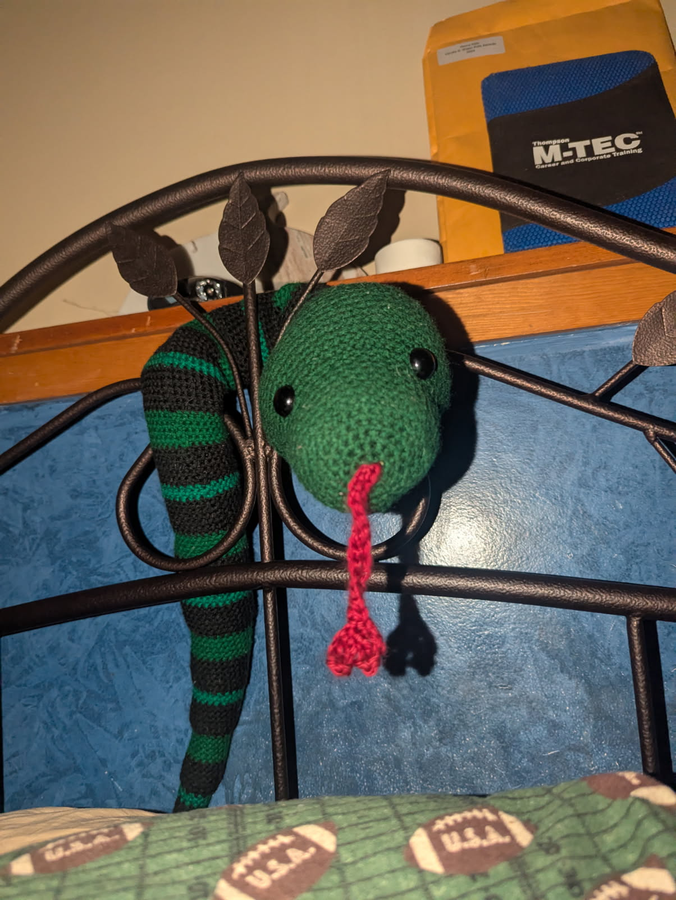

The Snake pattern is a great gift and a very cute friend. His stripes alternate
but the pattern does not tell you when to switch colors however if you want to
follow the pattern I made for the stripes I explain it later.

Materials: 5 Yarn colors: Light, Medium, and Dark Green, Red and Black yarn,
Crochet Hook, Scissors, Lardge Sewing Needle.
Notes: The pattern will not tell you how to add the stripes it will just say to 'crochet around'
but if you want to stripe the snake how I did here is how you do it: Crochet 32 RNDs in Medium Green.
The stripes start now and continue through the DEC rounds. 6 RNDs of Black, 5 RNDs of Dark Green, 6 RNDs of Black,
2 RNDs of Light Green, repeat until the end of the pattern.
Please do not copy this pattern, sell this pattern, or call it your own. You can make it yourself and sell it
or reference the website. If you have any questions, please feel free to contact me.